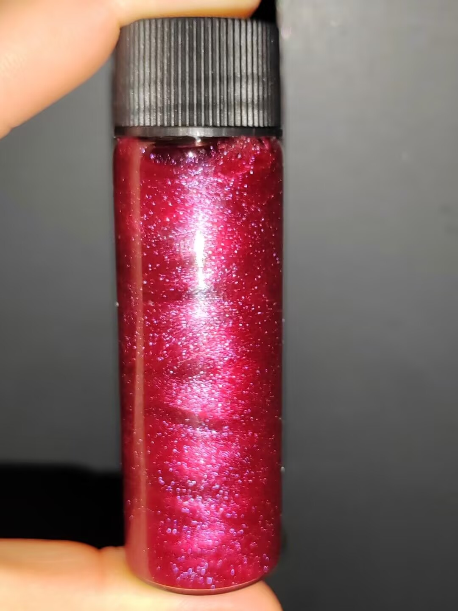

晶体化学指南
红晶雨篇

图源：迷路的野指针
🎯 预览
项目概览：
难度等级：★☆☆☆☆ (入门级)
制备周期：1-2小时
成功率：85%
推荐人群：零基础新手
所需材料：
甲基橙 (C
14
H
14
N
3
SO
3
Na)
草酸 (H
2
C
2
O
4
)
100mL烧杯、250mL烧杯
表面皿、西林瓶/螺口瓶
电子秤、磁力搅拌器/玻璃棒
一、基础认识
1.1 化学特性
化学式：甲基橙 C
14
H
14
N
3
SO
3
Na
外观特征
橙红色晶体，在溶液中形成血红色悬浮晶雨
溶解性
甲基橙易溶于水，形成橙红色溶液
反应原理
本质是甲基橙酸的沉淀溶解平衡，析出的晶体为甲基橙酸
1.2 结构特点
有机晶体
甲基橙酸形成的有机晶体，具有鲜艳的红色
悬浮特性
晶体在溶液中悬浮流动，形成"晶雨"效果
观赏价值
血红色晶体在溶液中漂浮，极具视觉冲击力
二、实验与制备
2.1 实验步骤
💡 红晶雨制备法
材料：甲基橙、草酸、烧杯、表面皿、西林瓶、电子秤、搅拌器
步骤一：配制甲基橙溶液
称取2g甲基橙于100mL烧杯中，加40mL水后充分搅拌1-2分钟
确保甲基橙完全溶解，形成均匀的橙红色溶液
步骤二：加入草酸
向溶液中加入2-3g草酸，充分搅拌1-2分钟
也可换算为两倍物质的量的乙酸替代草酸
步骤三：加热处理
将溶液加热到微沸后冷却
加热促进反应完全，冷却后析出晶体
步骤四：分离处理
将含有晶雨的上层溶液倒入250mL烧杯中，留下大块颗粒物
大块颗粒物可按照观赏需求加水稀释获得额外晶雨
步骤五：装瓶保存
将250mL烧杯中的母液倒入西林瓶中，盖紧瓶盖
成品即为"红晶雨"，可作为观赏工艺品
步骤六：清理工作
将全部仪器洗净并收好，清理桌面
甲基橙有染色性，需彻底清洗
2.2 观赏技巧
💡 增强视觉效果
打光处理
溶液颜色较深，可搅拌/震荡/摇匀后进行打光处理，展现血红色晶体在溶液中流淌漂浮的效果
背景选择
使用白色或浅色背景可增强红色晶体的视觉冲击力
动态展示
轻轻摇晃瓶身，观察晶体如雨般飘落的动态效果
三、安全与注意事项
3.1 染色防护
手套必需：
甲基橙沾染到手上难以清洗，实验应全程戴好手套
及时清洗：
若溶液滴在皮肤上应立刻用大量清水冲洗
衣物防护：
建议穿着实验服或旧衣物，避免染色
3.2 化学品安全
草酸特性
草酸有刺激性，避免直接接触皮肤和眼睛
加热安全
加热溶液时注意防止烫伤，使用适当的热源
废液处理
实验废液应妥善处理，不可随意倒入下水道
四、成果展示与质量评估
优质红晶雨特征
优质晶雨：
颜色鲜艳，呈血红色
晶体悬浮均匀，分布适中
流动性好，摇晃后形成美丽雨滴效果
透明度适中，便于观察内部晶体
问题晶雨：
颜色暗淡 - 反应不完全或浓度不足
晶体沉淀 - 溶液浓度不当或保存时间过长
浑浊不清 - 杂质过多或过滤不彻底
晶体过大 - 生长条件控制不当
五、问题诊断与解决
常见问题排查
问题一：晶雨形成缓慢
可能原因：
草酸添加量不足、加热不充分、冷却速度过快
解决方案：
增加草酸用量，确保加热至微沸，缓慢冷却溶液
问题二：晶体颜色不鲜艳
可能原因：
甲基橙纯度不足、溶液浓度过低、光照条件差
解决方案：
使用高纯度试剂，适当增加甲基橙用量，改善观察光照条件
问题三：晶体沉淀过快
可能原因：
晶体尺寸过大、溶液粘度过低
解决方案：
控制晶体生长条件，适当调整溶液浓度
六、科学原理
6.1 反应原理
沉淀平衡
红晶雨本质是甲基橙酸的沉淀溶解平衡，草酸提供酸性环境促使甲基橙酸析出
晶体形成
甲基橙是其钠盐形式，在酸性条件下转化为甲基橙酸并析出晶体
6.2 视觉原理
悬浮效应
微小晶体在溶液中形成胶体悬浮体系，产生"晶雨"视觉效果
光学特性
甲基橙分子结构中的偶氮基团赋予其鲜艳的红色，增强视觉冲击力
七、应用与展示
7.1 艺术展示
工艺品制作
装瓶后的西林瓶/螺口瓶可作为观赏用的工艺品，具有独特的装饰价值
科学展示
可用于科学展览或教学演示，展示沉淀溶解平衡和晶体形成过程
摄影素材
血红色晶体在溶液中漂浮的独特视觉效果，是极佳的摄影素材
八、保存与维护
8.1 保存方法
密封保存
使用西林瓶或螺口瓶密封保存，防止溶液蒸发和污染
避光存放
避免长时间阳光直射，防止颜色褪色
温度稳定
存放在温度稳定的环境中，避免剧烈温度变化影响晶体稳定性
防破损
小心保管防止玻璃瓶破裂，可放置在柔软垫料上
本章作者
不会炼金的阿贝少
晶体专家
内容导航
基础认识
实验制备
安全事项
质量评估
问题诊断
科学原理
应用展示
保存维护
返回首页